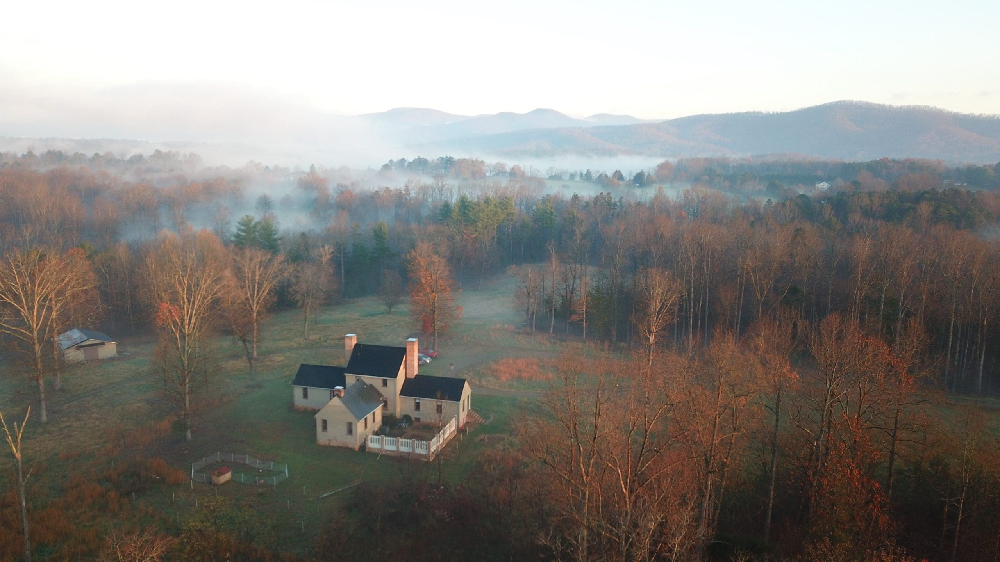

DSP training & documentation
Clear expectations for notes, supervision, handoffs, and teamwork—so outdoor days stay safe and coordinated.
The campus shows how a working farm can still meet every DBHDS expectation: structured trails for movement and pre-vocational routines, gardens for therapeutic horticulture, barns and fields for animal care, and porches for rest and regulation—all staffed by DSPs who like being outside.

Clear expectations for notes, supervision, handoffs, and teamwork—so outdoor days stay safe and coordinated.
Seasonal rhythms for trails, high tunnels, animals, and equipment—balanced with participant energy and weather.
Small groups, 1:1 coaching, and outings that reflect real Western Albemarle partners—not generic templates.
Additional sites depend on disciplined systems here first: licensing, staffing pipelines, and relationships that can’t be rushed.
Curious about future locations after our home campus matures? Leave a note via community interest—service referrals still belong with admissions.